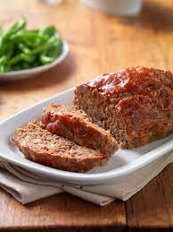

Meatloaf

Description
Meatloaf is a classic dish made of ground meant combined with other ingredients to form a loaf.
it is either hand-formed on a baking tray or pan-formed by cooking it in a pan. It is
typically made with group beef but can also be made with ground lamb, pork, veal, venison, poultry,
or imitation meats.
Ingredients
- 2 pounds lean ground beef
- 1 (10.75 oz) can condensed tomato soup
- 1 onion, finely diced
- 1 cup rolled oats
- 2 eggs, beaten
- 1 tablespoon steak sauce
- 1/2 cup ketchup
- 3 tablespoons prepared mustard
Steps
- Preheat the oven to 350 degrees F.
- Combine ground beef, soup, chopped onion, rolled oats
eggs, steak sauce, ketchup, and mustard in a large bowl. Mix well.
- Shape into a loaf, and pat into a loaf pan.
- Bake in the preheated oven until no longer pink in the center, about 1 hour.